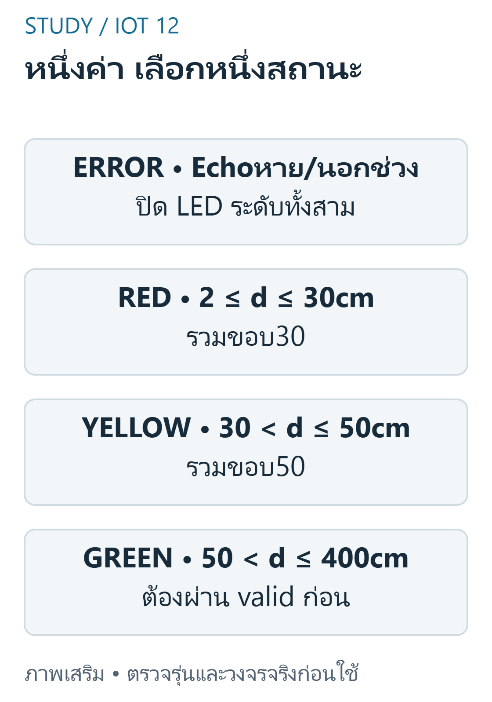
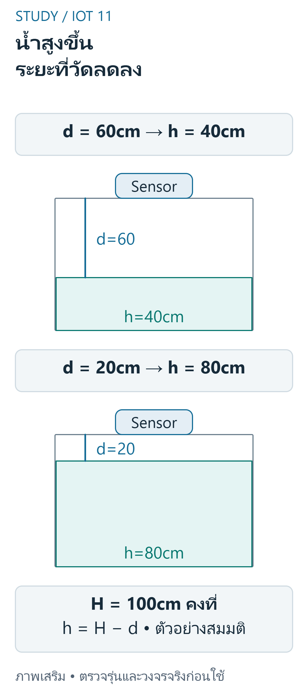
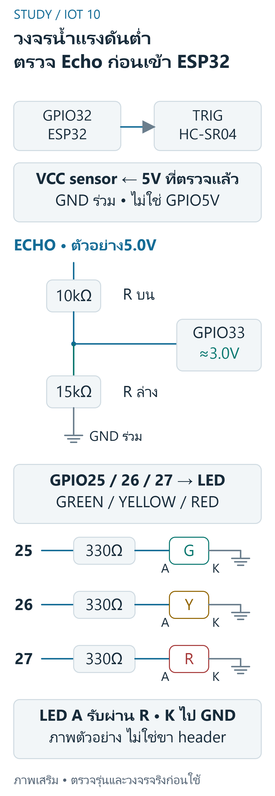
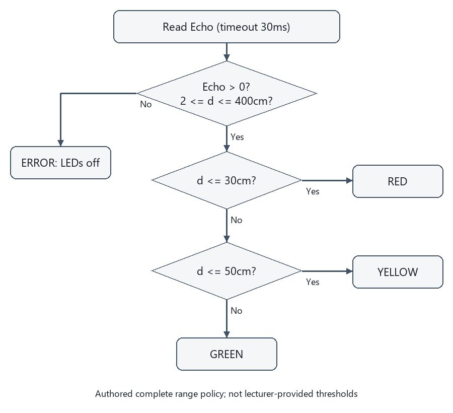

FINAL 04 — ระบบวัดระดับน้ำด้วย ESP32
เป้าหมายการเรียนรู้
- แยก sample,requirement และ authoredthreshold ของระบบน้ำ
- สร้างตาราง partition และทดสอบ 29.9,30,30.1,50,50.1
- เขียน flowchart ที่รักษา measurementinvalid และวนต่ออย่างชัดเจน
- วาด wiringtable ที่แยก VCC,GND,Trigger,Echo และ LEDresistor
- วางแผน test สี่ stateGREEN / YELLOW / RED / ERROR
ขอบเขต หลักฐาน และความปลอดภัย
วิชา 89022567 เลือกศึกษา Week 9–12 โดยยังไม่ยืนยันว่าเป็นขอบเขตสอบ Final ทางการทั้งหมด หลักฐานต้นฉบับ: A09 requirement1–2; W09 slides11,14–19. เลขหน้า PDF หมายถึงหน้าจริงของไฟล์ (physical page); เอกสาร Word อ้างหัวข้องานและหน้าแปลงส่วนตัวตาม บัญชีแหล่งที่มา. ไม่เผยแพร่ต้นฉบับหรือข้อมูลส่วนตัวของผู้เรียน
ตัวอย่างและเฉลยต่อไปนี้จัดทำเสริม ไม่ใช่เฉลยทางการ ใช้บอร์ด classic ESP32-WROOM กับ Arduino-ESP32 core 3.3.11 เป็นเป้าหมาย ตัวเลขขา ระดับสัญญาณ (polarity) เกณฑ์ช่วง (threshold) และที่อยู่จอ OLED เป็นสมมติฐานที่ประกาศ ห้ามเหมารวมกับ ESP32 ทุกรุ่น
ใช้เฉพาะ LED หรือโหลดแรงดันต่ำผ่านโมดูล/วงจรขับที่เข้ากันได้ ห้ามขับขดลวดรีเลย์จาก GPIO โดยตรง และห้ามต่อไฟบ้านบน breadboard ตรวจ Echo 5V กับ GPIO 3.3V วงจรแปลงระดับ กราวด์ และตัวต้านทานก่อนจ่ายไฟ การคอมไพล์และการจำลองไม่พิสูจน์ความถูกต้องของวงจรหรือความแม่นยำเซนเซอร์จริง
อ่าน Requirement โดยไม่สร้างเกณฑ์ปลอม
A09 กำหนด sample60cm→เขียว,40cm→เหลือง,20cm→แดง และให้ส่ง flowchart / คำอธิบาย / wiring / video ไม่ได้บอก threshold สำหรับทุกระยะ บทนี้ใช้ policy เสริม d<=30 แดง,30<d<=50 เหลือง,d>50 เขียวหลัง validation2..400cm เท่านั้น ไม่ใช้แทนคำสั่งผู้สอนที่อาจมีเพิ่มเติม
ข้อควรระวัง: samplepoint ไม่ใช่การประกาศช่วงทั้งหมด
ตัวอย่างการให้เหตุผลที่จัดทำเสริม:
A09 ให้ตัวอย่างเรียงระยะ 20,40,60cm คู่สีตามลำดับคือข้อใด?
แนวคำตอบ: แดง,เหลือง,เขียว — สาม sample เป็นข้อกำหนด source โดยไม่กำหนด range ระหว่างจุด
ออกแบบ Classification ที่ครบและไม่ทับ
ใช้ if / else if / else ให้ validdistance หนึ่งค่าเลือกสีเดียว ค่า 30 อยู่แดง ค่า 50 อยู่เหลือง แยก ERROR เมื่อไม่มี Echo หรือ outofrange W09slide19 มีช่อง 100..200 ที่ไม่เข้าเงื่อนไขในรูปและหน่วยไม่ชัด จึงไม่คัดเป็น universalclassifier

อ่านภาพ: อ่านขอบ30อยู่REDและ50อยู่YELLOW ตรวจinvalidก่อนจำแนก การหายของEchoไม่ใช่ระยะ0cmที่ยืนยันว่าระดับน้ำสูง
ข้อควรระวัง: ตรวจเงื่อนไขแต่ละสีแยก if อาจทำให้เปิดหลายดวงเมื่อช่วงทับ
ตัวอย่างการให้เหตุผลที่จัดทำเสริม:
ตาม policy เสริมของบท d=30cm valid เลือก state ใด?
แนวคำตอบ: RED — policy เสริมใช้ d<=30 เป็น RED จึง 30 รวมขอบแดง;ค่าถัดไปมากกว่า 30 จึงเข้าช่วงเหลือง
Flowchart และ Reference Height
Start→configure→measure→validate→classify→writeoneLED→report→wait→repeat เมื่อ invalid ให้ปิด LED ระดับทั้งสามและรายงาน ERROR ตาม policy เสริม อย่าให้ 0cm ปลอมเป็น highwater ถ้าต้องการความสูงจริงให้กำหนด Hและใช้ h=H−d พร้อม geometry / หน่วย

อ่านภาพ: Sensor อยู่ที่เดิมจึงวัดระยะถึงผิวน้ำ ไม่ใช่ความสูงน้ำโดยตรง ภาพใช้H100cmเป็นตัวอย่างเดียวกับแบบฝึกในบท ไม่ใช่ขนาดถังที่ผู้สอนรับรอง
ข้อควรระวัง: ระยะถึงน้ำลดลงเมื่อระดับน้ำสูงขึ้น ไม่ได้เพิ่มตามชื่อ high
ตัวอย่างการให้เหตุผลที่จัดทำเสริม:
ใช้ H100cm คงที่และ d60cm ความสูงน้ำ hกี่ cm?
แนวคำตอบ: 40 — h=H−d ตาม datum ที่กำหนด
วงจร Low-Voltage ตัวอย่าง
ตัวอย่าง classicESP32 ใช้ TRIG32,ECHO33 ผ่าน levelinterface ที่ตรวจแล้ว;LED เขียว 25 เหลือง 26 แดง 27 แต่ละดวงมี 330Ωอนุกรมสู่ GND เลขเหล่านี้เป็น authoredpinassignment ไม่ใช่ยืนยันสายจาก W09slide18 ไฟ 5V ของ HC-SR04classic ไม่ควรเข้าขา GPIO โดยตรง ตรวจ GND / ไฟเลี้ยง / logiccompatibility ก่อนจ่ายไฟ

อ่านภาพ: ตารางต่อสายตรวจแยกจากภาพ:ที่Echo5.0V dividerให้3.0V ต้องตรวจค่าHIGH/LOWจริง tolerance การโหลดและรูปพัลส์ให้อยู่ใน GPIO limits ก่อนต่อ;ตรวจว่าTRIG3.3Vผ่านVIHของmoduleจริง LEDแต่ละดวงมีตัวต้านทานแยก
ตารางตรวจสายของภาพนี้ — ไม่ใช่ลำดับขา header
| จาก | ถึง | ชนิด / เงื่อนไข |
|---|---|---|
| ESP32 GPIO32 | HC-SR04 TRIG | Signal: ตรวจ VIH ของ module |
| HC-SR04 ECHO | Rtop10kΩ → junction | Signal: ห้ามเข้าขาGPIOโดยตรง |
| junction | ESP32 GPIO33 | Signal: nominal3.0V เมื่อEcho5.0V |
| junction | Rbottom15kΩ → GND | Divider return |
| GPIO25 / 26 / 27 | 330Ωแยกดวง → LED A | Output: GREEN / YELLOW / RED |
| LED K ทั้งสาม | GNDร่วม | Ground |
| HC-SR04 VCC | แหล่ง5Vที่ตรวจแล้ว | Power: ไม่ใช่GPIO |
| ESP32 / sensor / divider | GNDร่วม | Ground: nonisolated example |
ข้อควรระวัง: ห้ามคัดภาพวงจรที่ไม่แสดง resistor / levelshift มาเป็นใบรับรองความปลอดภัย
ตัวอย่างการให้เหตุผลที่จัดทำเสริม:
Echo ของ module5V กับ GPIO3.3V ควรเชื่อมอย่างไรเมื่อยังไม่ได้ตรวจ logicoutput?
แนวคำตอบ: ตรวจสเปก/ระดับแล้วใช้levelinterfaceที่เหมาะก่อนต่อ — powerdomain กับ GPIOdomain ต่างกัน อย่าถือว่ารูปวงจรย่อเป็นการรับรอง electrical
โปรแกรมและ Fail State
อ่าน pulse โดยมี timeout แล้วคำนวณ cm ตรวจ validity ก่อนเลือกสี ฟังก์ชัน classification บริสุทธิ์สามารถทดสอบด้วยค่าจำลองได้ แต่ไม่ได้พิสูจน์ accuracy ของ hardware ค่า trigger10µs กับ sampling70ms มีคนละหน้าที่ program พิมพ์ state ให้ trace ได้และยังไม่ส่ง network
ข้อควรระวัง: การค้างไฟแดง / เขียวจากค่าครั้งก่อนหลัง sensor เสียต้องเป็นนโยบายที่ประกาศไม่ใช่บั๊กซ่อน
ตัวอย่างการให้เหตุผลที่จัดทำเสริม:
policyERROR เมื่อ Echo หายควรทำอะไรกับ output เพื่อไม่แอบรายงานสถานะเก่า?
แนวคำตอบ: ปิดLEDระดับทั้งสามและรายงานERRORตามนโยบายบท — เป็น authoredfailstate ไม่อ้างว่า sensor ยังวัดสำเร็จ
Flowchart และตารางต่อสายตัวอย่าง
ตารางต่อไปนี้อธิบายส่วนตัดสินใจเดียวกับภาพ อ่านได้บนจอเล็กและใช้เป็นเกณฑ์ทดสอบ: ตรวจ invalid ก่อนทุกช่วง
| เงื่อนไข | สถานะ |
|---|---|
| ไม่มี Echo หรือระยะนอก2..400cm | ERROR ปิดLEDระดับทั้งสาม |
| valid และd<=30cm | RED |
| valid และ30<d<=50cm | YELLOW |
| valid และ50<d<=400cm | GREEN |

| บทบาท | GPIO/การต่อสมมติ | ข้อกำหนด |
|---|---|---|
| TRIG | 32→moduletrigger | ตรวจVIHของmodule |
| ECHO | module→levelinterface→33 | ไม่ป้อน5Vตรง |
| LEDเขียว/เหลือง/แดง | 25/26/27 | resistor330Ωแยกแต่ละดวงไปGND |
| VCC/GND | ตามmoduleและcommonreference | ไม่ใช้GPIOจ่ายกำลังcoil |
โปรแกรม C++ ที่เขียนเสริม
สเก็ตช์ C++ นี้เขียนเสริมสำหรับเป้าหมายที่ระบุ คอมเมนต์อธิบาย API และสมมติฐาน มีการตรวจคอมไพล์จริง แต่ไม่มีการอัปโหลดหรือวัดผลฮาร์ดแวร์ ห้ามนำไปต่ออุปกรณ์ที่ยังไม่ทราบสเปกโดยตรง
#include <Arduino.h>constexpr uint8_t TRIG=32, ECHO=33, GREEN=25, YELLOW=26, RED=27;// ขาทั้งหมดเป็นตัวอย่าง; Echoต้องผ่านlevelinterface, LEDแต่ละดวงผ่าน330โอห์มint classify(float cm, bool valid) { if (!valid) return -1; // ERROR ไม่ใช่0cm if (cm <= 30.0f) return 2; if (cm <= 50.0f) return 1; return 0;}void setup() { Serial.begin(115200); pinMode(TRIG,OUTPUT); pinMode(ECHO,INPUT); pinMode(GREEN,OUTPUT); pinMode(YELLOW,OUTPUT); pinMode(RED,OUTPUT); digitalWrite(GREEN,LOW); digitalWrite(YELLOW,LOW); digitalWrite(RED,LOW);}void loop() { digitalWrite(TRIG,LOW); delayMicroseconds(2); digitalWrite(TRIG,HIGH); delayMicroseconds(10); digitalWrite(TRIG,LOW); const unsigned long us=pulseIn(ECHO,HIGH,30000UL); const float cm=us*0.0343f/2.0f; const bool valid=us>0 && cm>=2.0f && cm<=400.0f; const int state=classify(cm,valid); digitalWrite(GREEN,state==0?HIGH:LOW); digitalWrite(YELLOW,state==1?HIGH:LOW); digitalWrite(RED,state==2?HIGH:LOW); Serial.println(state<0?"ERROR":state==2?"RED":state==1?"YELLOW":"GREEN"); delay(70);}อ่าน Expected Behavior และกรณีขอบ
ข้อมูลทดสอบ60/40/20cm ให้ GREEN/YELLOW/RED ตามลำดับ;ขอบ30=RED,50=YELLOW;invalid ปิดLEDทั้งสามและพิมพ์ ERROR ไม่ใช้สีเดิมต่อโดยเงียบ
- samplepoint ไม่ใช่การประกาศช่วงทั้งหมด
- ตรวจเงื่อนไขแต่ละสีแยก if อาจทำให้เปิดหลายดวงเมื่อช่วงทับ
- ระยะถึงน้ำลดลงเมื่อระดับน้ำสูงขึ้น ไม่ได้เพิ่มตามชื่อ high
- ห้ามคัดภาพวงจรที่ไม่แสดง resistor / levelshift มาเป็นใบรับรองความปลอดภัย
- การค้างไฟแดง / เขียวจากค่าครั้งก่อนหลัง sensor เสียต้องเป็นนโยบายที่ประกาศไม่ใช่บั๊กซ่อน
ฝึกอธิบายพร้อมแนวประเมิน
โจทย์เหล่านี้จัดทำเสริมเพื่อทบทวน ไม่ใช่ข้อสอบมหาวิทยาลัยที่ยืนยันแล้ว โหมดฝึกและคลังข้อสอบด้านล่างแสดงคำอธิบายหลังส่งคำตอบตามระบบเดิม เมื่อปิด JavaScript ยังอ่านเฉลยในส่วนพับได้ คำอธิบายและโค้ดอิสระใช้เกณฑ์ประเมินตนเอง (rubric) ไม่ตรวจคะแนนอัตโนมัติ
1. อ่าน Requirement โดยไม่สร้างเกณฑ์ปลอม
แยก sample,requirement และ authoredthreshold ของระบบน้ำ
แนวคำตอบ: รักษาสาม sample และติดป้ายช่วง 30 / 50 ว่าเขียนเสริม ทดสอบขอบและ invalid
2. ออกแบบ Classification ที่ครบและไม่ทับ
สร้างตาราง partition และทดสอบ 29.9,30,30.1,50,50.1
แนวคำตอบ: กำหนด inclusivity ครบ ไม่มี gap และ error แยกจาก physicallevel
3. Flowchart และ Reference Height
เขียน flowchart ที่รักษา measurementinvalid และวนต่ออย่างชัดเจน
แนวคำตอบ: แยก validbranch กับ errorbranch และระบุ output ทุกครั้งไม่ค้างสีเดิมโดยไม่ตั้งใจ
4. วงจร Low-Voltage ตัวอย่าง
วาด wiringtable ที่แยก VCC,GND,Trigger,Echo และ LEDresistor
แนวคำตอบ: กำหนดรุ่น / แรงดัน / pins;แสดงการลดระดับ Echo และไม่ต่อไฟบ้าน
5. โปรแกรมและ Fail State
วางแผน test สี่ stateGREEN / YELLOW / RED / ERROR
แนวคำตอบ: ทดสอบสาม sourcepoints ขอบ 30 / 50,outofrange และ duration0 โดยระบุ expectedLED ครบ
สรุปก่อนสอบ
- อ่าน Requirement โดยไม่สร้างเกณฑ์ปลอม: samplepoint ไม่ใช่การประกาศช่วงทั้งหมด
- ออกแบบ Classification ที่ครบและไม่ทับ: ตรวจเงื่อนไขแต่ละสีแยก if อาจทำให้เปิดหลายดวงเมื่อช่วงทับ
- Flowchart และ Reference Height: ระยะถึงน้ำลดลงเมื่อระดับน้ำสูงขึ้น ไม่ได้เพิ่มตามชื่อ high
- วงจร Low-Voltage ตัวอย่าง: ห้ามคัดภาพวงจรที่ไม่แสดง resistor / levelshift มาเป็นใบรับรองความปลอดภัย
- โปรแกรมและ Fail State: การค้างไฟแดง / เขียวจากค่าครั้งก่อนหลัง sensor เสียต้องเป็นนโยบายที่ประกาศไม่ใช่บั๊กซ่อน
อ้างอิงและข้อจำกัด
- ต้นฉบับส่วนตัว: A09 requirement1–2; W09 slides11,14–19; ไม่แนบสำเนา ไม่อ้างว่ามีsourceอื่นที่ยังไม่เปิด
- Source coverage, Academic verification, Exam verification, QA
- ESP32 datasheet — ตรวจ2026-10-29;ใช้target/core3.3.11สำหรับcompileและอย่าสมมติว่าlatestdocsตรงกับทุกcoreเก่า
- GPIO API — ตรวจ2026-10-29;ใช้target/core3.3.11สำหรับcompileและอย่าสมมติว่าlatestdocsตรงกับทุกcoreเก่า
- HC-SR04 reference — ตรวจ2026-10-29;ใช้target/core3.3.11สำหรับcompileและอย่าสมมติว่าlatestdocsตรงกับทุกcoreเก่า
ข้อจำกัดที่ยังไม่ยืนยัน: แรงดัน ระดับกระตุ้น ที่อยู่ และการต่อสายของโมดูลจริง ความแม่นยำ สภาพแวดล้อม และวิดีโอทดลอง การตรวจเว็บ/คอมไพล์/จำลองไม่เท่ากับผ่านการทดสอบฮาร์ดแวร์ และไม่ยืนยันขอบเขตข้อสอบจริง